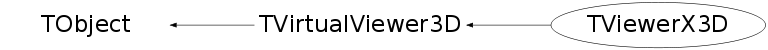

class TViewerX3D: public TVirtualViewer3D
TViewerX3D C++ interface to the X3D viewer
Function Members (Methods)
public:
| TViewerX3D(TVirtualPad* pad) | |
| TViewerX3D(const TViewerX3D&) | |
| TViewerX3D(TVirtualPad* pad, Option_t* option, const char* title = "X3D Viewer", UInt_t width = 800, UInt_t height = 600) | |
| TViewerX3D(TVirtualPad* pad, Option_t* option, const char* title, Int_t x, Int_t y, UInt_t width, UInt_t height) | |
| virtual | ~TViewerX3D() |
| void | TObject::AbstractMethod(const char* method) const |
| virtual void | AddCompositeOp(UInt_t) |
| virtual Int_t | AddObject(const TBuffer3D& buffer, Bool_t* addChildren = 0) |
| virtual Int_t | AddObject(UInt_t placedID, const TBuffer3D& buffer, Bool_t* addChildren = 0) |
| virtual void | TObject::AppendPad(Option_t* option = "") |
| virtual void | BeginScene() |
| virtual void | TObject::Browse(TBrowser* b) |
| virtual Bool_t | BuildingScene() const |
| virtual Bool_t | TVirtualViewer3D::CanLoopOnPrimitives() const |
| static TClass* | Class() |
| virtual const char* | TObject::ClassName() const |
| virtual void | TObject::Clear(Option_t* = "") |
| virtual TObject* | TObject::Clone(const char* newname = "") const |
| void | Close() |
| virtual void | CloseComposite() |
| virtual Int_t | TObject::Compare(const TObject* obj) const |
| virtual void | TObject::Copy(TObject& object) const |
| virtual void | TObject::Delete(Option_t* option = "")MENU |
| virtual Int_t | TObject::DistancetoPrimitive(Int_t px, Int_t py) |
| virtual void | TObject::Draw(Option_t* option = "") |
| virtual void | TObject::DrawClass() constMENU |
| virtual TObject* | TObject::DrawClone(Option_t* option = "") constMENU |
| virtual void | TVirtualViewer3D::DrawViewer() |
| virtual void | TObject::Dump() constMENU |
| virtual void | EndScene() |
| virtual void | TObject::Error(const char* method, const char* msgfmt) const |
| Int_t | ExecCommand(Int_t px, Int_t py, char command) |
| virtual void | TObject::Execute(const char* method, const char* params, Int_t* error = 0) |
| virtual void | TObject::Execute(TMethod* method, TObjArray* params, Int_t* error = 0) |
| virtual void | TObject::ExecuteEvent(Int_t event, Int_t px, Int_t py) |
| virtual void | TObject::Fatal(const char* method, const char* msgfmt) const |
| virtual TObject* | TObject::FindObject(const char* name) const |
| virtual TObject* | TObject::FindObject(const TObject* obj) const |
| virtual Option_t* | TObject::GetDrawOption() const |
| static Long_t | TObject::GetDtorOnly() |
| virtual const char* | TObject::GetIconName() const |
| virtual const char* | TObject::GetName() const |
| virtual char* | TObject::GetObjectInfo(Int_t px, Int_t py) const |
| static Bool_t | TObject::GetObjectStat() |
| virtual Option_t* | TObject::GetOption() const |
| void | GetPosition(Float_t& longitude, Float_t& latitude, Float_t& psi) |
| virtual const char* | TObject::GetTitle() const |
| virtual UInt_t | TObject::GetUniqueID() const |
| virtual Bool_t | TObject::HandleTimer(TTimer* timer) |
| virtual ULong_t | TObject::Hash() const |
| void | Iconify() |
| virtual void | TObject::Info(const char* method, const char* msgfmt) const |
| virtual Bool_t | TObject::InheritsFrom(const char* classname) const |
| virtual Bool_t | TObject::InheritsFrom(const TClass* cl) const |
| virtual void | TObject::Inspect() constMENU |
| void | TObject::InvertBit(UInt_t f) |
| virtual TClass* | IsA() const |
| virtual Bool_t | TObject::IsEqual(const TObject* obj) const |
| virtual Bool_t | TObject::IsFolder() const |
| Bool_t | TObject::IsOnHeap() const |
| virtual Bool_t | TObject::IsSortable() const |
| Bool_t | TObject::IsZombie() const |
| virtual void | TObject::ls(Option_t* option = "") const |
| void | TObject::MayNotUse(const char* method) const |
| virtual Bool_t | TObject::Notify() |
| virtual void | TVirtualViewer3D::ObjectPaint(TObject*, Option_t* = "") |
| void | TObject::Obsolete(const char* method, const char* asOfVers, const char* removedFromVers) const |
| virtual Bool_t | OpenComposite(const TBuffer3D&, Bool_t* = 0) |
| static void | TObject::operator delete(void* ptr) |
| static void | TObject::operator delete(void* ptr, void* vp) |
| static void | TObject::operator delete[](void* ptr) |
| static void | TObject::operator delete[](void* ptr, void* vp) |
| void* | TObject::operator new(size_t sz) |
| void* | TObject::operator new(size_t sz, void* vp) |
| void* | TObject::operator new[](size_t sz) |
| void* | TObject::operator new[](size_t sz, void* vp) |
| TViewerX3D& | operator=(const TViewerX3D&) |
| virtual void | TVirtualViewer3D::PadPaint(TVirtualPad*) |
| virtual void | TObject::Paint(Option_t* option = "") |
| void | PaintPolyMarker(const TBuffer3D& buffer) const |
| virtual void | TObject::Pop() |
| virtual Bool_t | PreferLocalFrame() const |
| virtual void | TObject::Print(Option_t* option = "") const |
| virtual void | TVirtualViewer3D::PrintObjects() |
| Bool_t | ProcessFrameMessage(Long_t msg, Long_t parm1, Long_t parm2) |
| virtual Int_t | TObject::Read(const char* name) |
| virtual void | TObject::RecursiveRemove(TObject* obj) |
| void | TObject::ResetBit(UInt_t f) |
| virtual void | TVirtualViewer3D::ResetCameras() |
| virtual void | TVirtualViewer3D::ResetCamerasAfterNextUpdate() |
| virtual void | TObject::SaveAs(const char* filename = "", Option_t* option = "") constMENU |
| virtual void | TObject::SavePrimitive(ostream& out, Option_t* option = "") |
| virtual TObject* | TVirtualViewer3D::SelectObject(Int_t, Int_t) |
| void | TObject::SetBit(UInt_t f) |
| void | TObject::SetBit(UInt_t f, Bool_t set) |
| virtual void | TObject::SetDrawOption(Option_t* option = "")MENU |
| static void | TObject::SetDtorOnly(void* obj) |
| static void | TObject::SetObjectStat(Bool_t stat) |
| virtual void | TObject::SetUniqueID(UInt_t uid) |
| void | Show() |
| virtual void | ShowMembers(TMemberInspector& insp) |
| virtual void | Streamer(TBuffer& b) |
| void | StreamerNVirtual(TBuffer& b) |
| virtual void | TObject::SysError(const char* method, const char* msgfmt) const |
| Bool_t | TObject::TestBit(UInt_t f) const |
| Int_t | TObject::TestBits(UInt_t f) const |
| void | Update() |
| virtual void | TObject::UseCurrentStyle() |
| static TVirtualViewer3D* | TVirtualViewer3D::Viewer3D(TVirtualPad* pad = 0, Option_t* type = "") |
| virtual void | TObject::Warning(const char* method, const char* msgfmt) const |
| virtual Int_t | TObject::Write(const char* name = 0, Int_t option = 0, Int_t bufsize = 0) |
| virtual Int_t | TObject::Write(const char* name = 0, Int_t option = 0, Int_t bufsize = 0) const |
protected:
| virtual void | TObject::DoError(int level, const char* location, const char* fmt, va_list va) const |
| void | TObject::MakeZombie() |
private:
| void | CreateViewer(const char* name) |
| void | DeleteX3DWindow() |
| Bool_t | HandleContainerButton(Event_t* ev) |
| void | InitX3DWindow() |
Data Members
public:
| enum EPass { | kSize | |
| kDraw | ||
| }; | ||
| enum TObject::EStatusBits { | kCanDelete | |
| kMustCleanup | ||
| kObjInCanvas | ||
| kIsReferenced | ||
| kHasUUID | ||
| kCannotPick | ||
| kNoContextMenu | ||
| kInvalidObject | ||
| }; | ||
| enum TObject::[unnamed] { | kIsOnHeap | |
| kNotDeleted | ||
| kZombie | ||
| kBitMask | ||
| kSingleKey | ||
| kOverwrite | ||
| kWriteDelete | ||
| }; |
private:
| Bool_t | fBuildingScene | Rebuilding 3D scene |
| TGCanvas* | fCanvas | canvas widget |
| TGLayoutHints* | fCanvasLayout | layout for canvas widget |
| TX3DContainer* | fContainer | container containing X3D window |
| TGPopupMenu* | fFileMenu | file menu |
| UInt_t | fHeight | viewer height |
| TGPopupMenu* | fHelpMenu | help menu |
| TX3DFrame* | fMainFrame | the main GUI frame |
| TGMenuBar* | fMenuBar | menubar |
| TGLayoutHints* | fMenuBarHelpLayout | layout hint for help menu in menubar |
| TGLayoutHints* | fMenuBarItemLayout | layout hints for menu in menubar |
| TGLayoutHints* | fMenuBarLayout | menubar layout hints |
| TString | fOption | option string to be passed to X3D |
| TVirtualPad* | fPad | pad we are attached to |
| TViewerX3D::EPass | fPass | |
| TString | fTitle | viewer title |
| UInt_t | fWidth | viewer width |
| Window_t | fX3DWin | X3D window |
| Int_t | fXPos | viewer X position |
| Int_t | fYPos | viewer Y position |
| static Bool_t | fgCreated | TViewerX3D is a singleton |
Class Charts
{kind=link}
{kind=link}
{kind=link}
{kind=link}

Function documentation
TViewerX3D(TVirtualPad* pad, Option_t* option, const char* title = "X3D Viewer", UInt_t width = 800, UInt_t height = 600)
Create ROOT X3D viewer.
TViewerX3D(TVirtualPad* pad, Option_t* option, const char* title, Int_t x, Int_t y, UInt_t width, UInt_t height)
Create ROOT X3D viewer.
Int_t AddObject(const TBuffer3D& buffer, Bool_t* addChildren = 0)
The x3d viewer cannot rebuild a scene once created
Int_t AddObject(UInt_t placedID, const TBuffer3D& buffer, Bool_t* addChildren = 0)
We don't support placed IDs - discard
Int_t ExecCommand(Int_t px, Int_t py, char command)
This function may be called from a script to animate an X3D picture
px, py mouse position
command = 0 --- move to px,py
= w --- wireframe mode
= e --- hidden line mode
= r --- hidden surface mode
= u --- move object down
= i --- move object up
= o --- toggle controls style
= s --- toggle stereo display
= d --- toggle blue stereo view
= f --- toggle double buffer
= h --- move object right
= j --- move object forward
= k --- move object backward
= l --- move object left
= x a --- rotate about x
= y b --- rotate about y
= z c --- rotate about z
= 1 2 3 --- autorotate about x
= 4 5 6 --- autorotate about y
= 7 8 9 --- autorotate about z
= [ ] { } --- adjust focus
Example:
{
gSystem->Load("libX3d");
TCanvas *c1 = new TCanvas("c1");
TFile *f = new TFile("hsimple.root");
TTree *ntuple = (TTree*)f->Get("ntuple");
ntuple->SetMarkerColor(kYellow);
ntuple->Draw("px:py:pz");
TViewerX3D *x3d = new TViewerX3D(c1,"");
for (Int_t i=0;i<500;i++) {
Int_t px = i%500;
Int_t py = (2*i)%200;
x3d->ExecCommand(px,py,0); //rotate
if (i%20 >10) x3d->ExecCommand(px,py,'j'); //zoom
if (i%20 <10) x3d->ExecCommand(px,py,'k'); //unzoom
}
}
Bool_t ProcessFrameMessage(Long_t msg, Long_t parm1, Long_t parm2)
Handle menu and other command generated by the user.
Bool_t HandleContainerButton(Event_t* ev)
After button release get current position and update associated pad.
TViewerX3D(TVirtualPad* pad)
Bool_t OpenComposite(const TBuffer3D& , Bool_t* = 0)
Composite shapes not supported on this viewer currently - ignore. Will result in a set of component shapes
{ return kTRUE; }